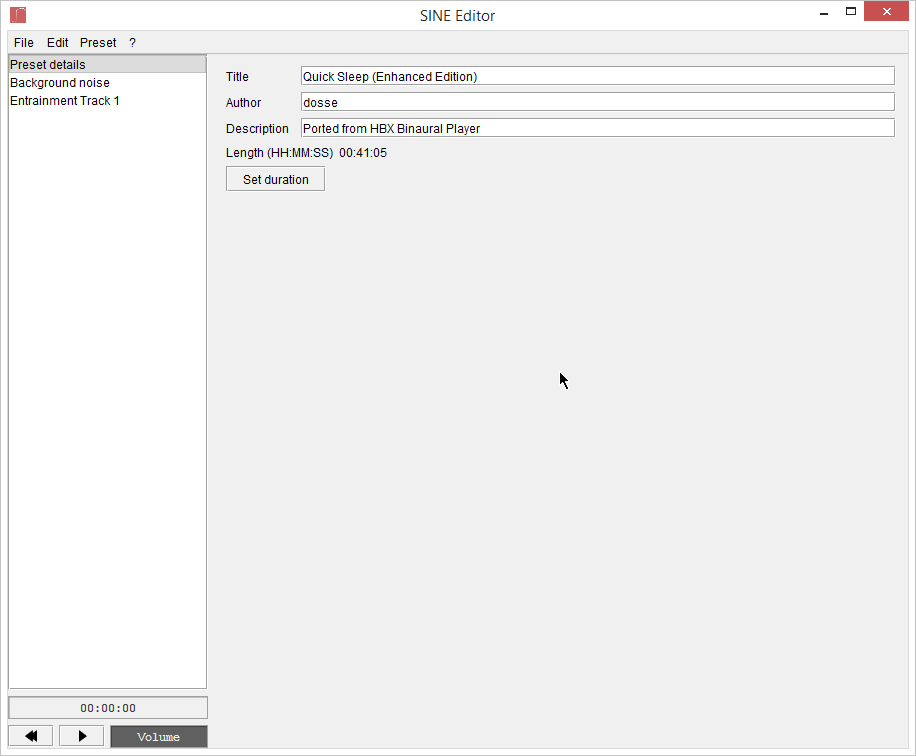
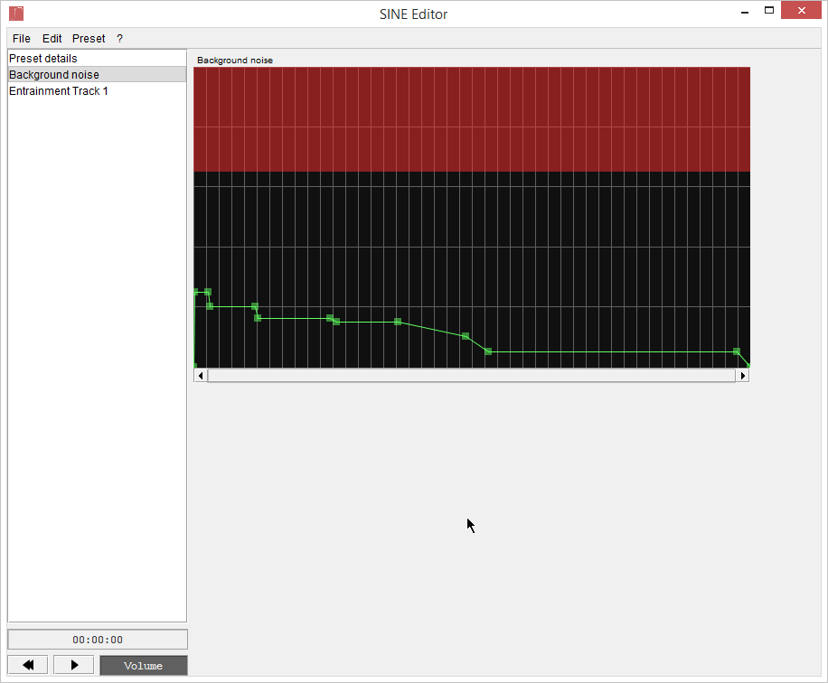
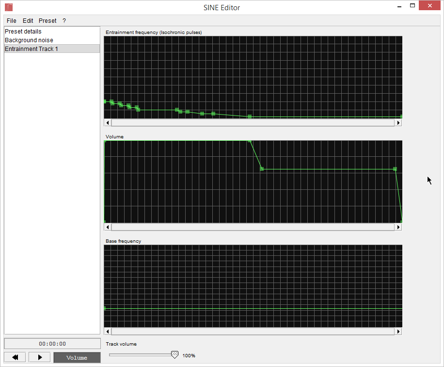

Struttura di un Preset
Un Preset di SINE consiste in 1 traccia di rumore di sottofondo e 1+ tracce di Entrainment.
Ogni traccia di Entrainment ha un volume della traccia e 3 envelope:uno per la Frequenza di Entrainment, uno per il Volume e uno per la Frequenza Base.
L'Envelope della Frequenza di Entrainment regola la frequenza delle pulsazioni isocroniche. Quest'applicazione supporta frequenze da 0 a 40Hz.
L'Envelope del Volume regola il volume delle pulsazioni (da non confondere con il volume della traccia, che è costante)
L'Envelope della Frequenza Base regola la frequenza della sinusoide usata per creare le pulsazioni.
I Preset hanno anche delle informazioni associate: Titolo, Autore e Descrizione.
Puoi anche far ripetere una parte del preset all'infinito.
Se carichi un preset, puoi vedere un esempio (ridimensiona la finestra se necessario):

Come puoi vedere sulla sinistra, questo Preset ha le sue informazioni (mostrate sulla destra), una traccia di rumore di sottofondo e una traccia di Entrainment.
Questo Preset si chiama "Quick Sleep (Enhanced edition)", è stato creato da dosse, la descrizione dice "Ported from HBX Binaural Player" (un'altra nostra applicazione), dura 41 minuti e 5 secondi e non ha un loop.
Ecco come si presenta la traccia di rumore nell'editor:

E la traccia di Entrainment:

Altre informazioni su come leggere e modificare gli envelope si trovano nella sezione controlli di questo manuale.